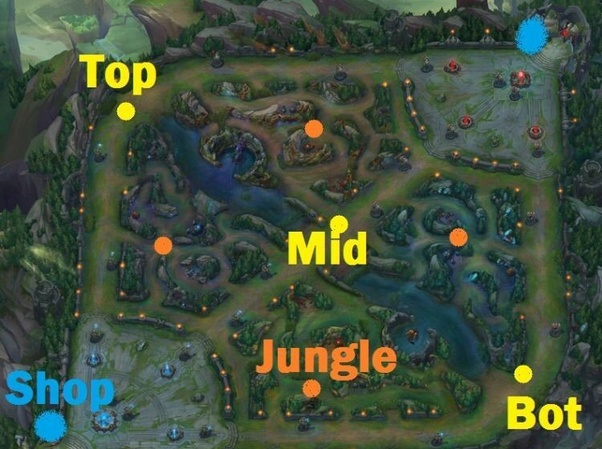
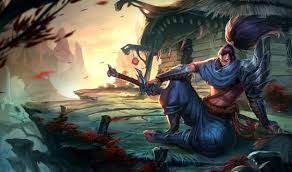

En este juego existen varias lineas, dichas lienas son:
linea de arriba, tambien llamada topline en donde estan los Topalaner, algunos ejemplos son
- Darius
- Malphite
- Garem
- Mordekaiser
- Teemo
Darius

linea de Jungla, algunos ejemplos son
- Maestro Yi
- Warwick
- Rammus
- Lee Sin
- Shyvana
Maestro Yi

linea del Medio, tambien llamada midlineen donde se encuentran los midlaner, algunos ejemplos son
- Yasuo
- Ahri
- Irelia
- Galio
- Veigar
Yasuo
En la linea de abajo, tambien llamada botlane en donde estan los ADC o Tirador, algunos ejemplos son
- Miss Fortune
- Lucian
- Jinks
- Ashe
- Twich
Miss Fortune

tambien en la linea de abajo se encuentran los soportes que ayudan al equipo, algunos ejemplos son
- Lux
- Morgana
- Thresh
- Blitzcrack
- Sona
Lux